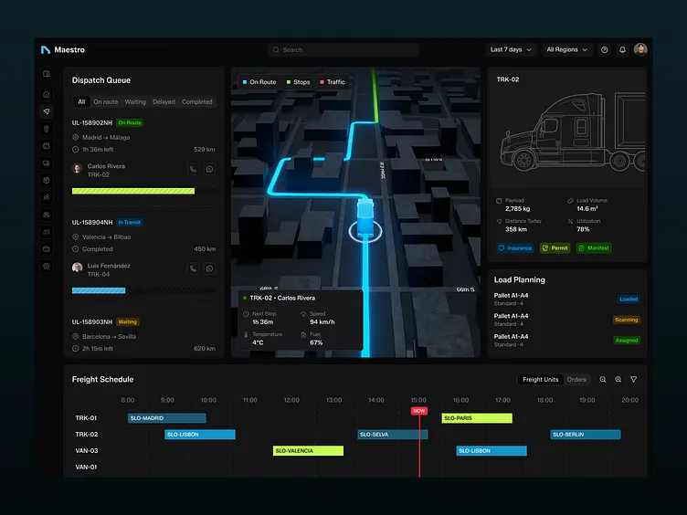
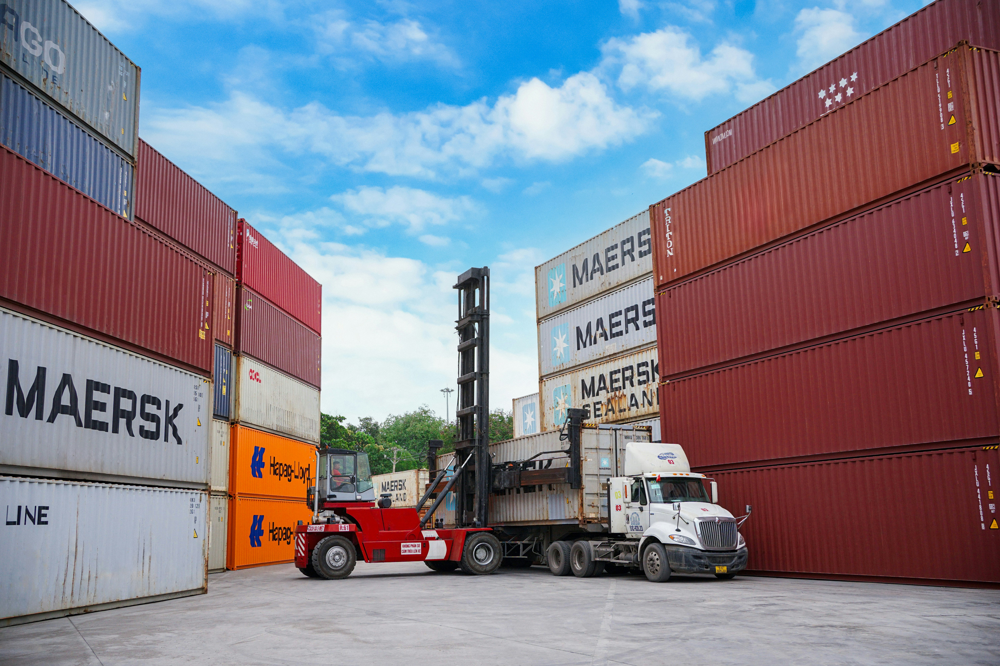

Why logistics companies lose money
Operations teams spend hours chasing shipment status, driver updates, missing documents, customer answers, and internal approvals. The cost is hidden because the work looks normal.

Executive problem
Manual updates, document chasing, repeated customer follow-up, spreadsheet reporting, and exception handling consume payroll before leaders see the loss.
Operations teams spend hours chasing shipment status, driver updates, missing documents, customer answers, and internal approvals. The cost is hidden because the work looks normal.
We identify the workflows that create the most repeated effort and automate the routine steps while keeping managers in control of exceptions.
Reduce avoidable admin hours and rework.
Keep customers updated without waiting for manual follow-up.
See delays, workload, documents, and exceptions earlier.

Manual work problem
The image is not decoration: this is the daily operating drag Estech removes from logistics teams by turning repetitive follow-up, document checks and reporting into controlled workflows.
Solution visibility
Estech presents automated work inside operational dashboards so leaders can see status, delays, workload and exceptions without waiting for manual reports.

Workflow automation
Managers stay in control with approval points, exception alerts and live visibility into the work that normally hides in chat, calls and spreadsheets.
Logistics operations
Estech focuses on the real operating environment: containers, documents, handoffs, status updates, customer response and time-sensitive exceptions.

Industries

Reduce manual follow-up, delays and operational blind spots.

Reduce manual follow-up, delays and operational blind spots.

Reduce manual follow-up, delays and operational blind spots.
Reduce manual follow-up, delays and operational blind spots.
Reduce manual follow-up, delays and operational blind spots.
Implementation process
Estech follows a controlled rollout designed for operational trust.
Map repetitive work, delays, handoffs, data sources, and approval points.
Estimate monthly time leakage and select the highest-value workflow.
Automate routine steps with manager control, logging, and rollback options.
Expand to additional workflows after the first measurable result.
FAQ
No. Estech removes repetitive coordination and paperwork so experienced staff can focus on exceptions, customers, and revenue-producing work.
A focused pilot usually takes 2 to 6 weeks after process selection, depending on data access, approvals, and integration complexity.
Usually no. Estech works around your existing tools first, then recommends system changes only when they produce a clear business outcome.
High-risk decisions, exceptions, and customer-sensitive actions can require human approval before completion.
Next step
Start with one workflow, prove the savings, then expand across the operation.
Request Operations Review